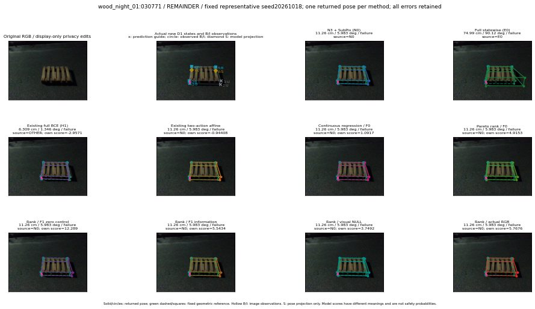

실선은 반환 자세, 초록 점선은 고정 기하 참조입니다. S는 영상 관측이 아닙니다. 점수는 모델별 의미가 다르며 보정된 안전 확률이 아닙니다. 개인정보 처리는 표시 사본에만 적용했습니다.
| 방법·seed | 위치 / 회전 / 공동성공 | 실제 출처 | 선택 후보 | 각 모델 자체 점수 |
|---|---|---|---|---|
| N0 | 11.26 cm / 5.983 deg / failure | N0 | N/A | N/A |
| E0 | 74.99 cm / 90.12 deg / failure | E0 | N/A | N/A |
| E0_REGENERATED | 74.99 cm / 90.12 deg / failure | E0 | E0_REGENERATED | N/A |
| POSEFIX_SUBPIX_PF_ANCHOR | 9.39 cm / 4.721 deg / failure | OTHER | N/A | N/A |
| POSEFIX_SUBPIX_YOLO_ANCHOR | 9.39 cm / 4.721 deg / failure | OTHER | N/A | N/A |
| D1_H1_MLP_s20261018 | 6.309 cm / 1.346 deg / failure | OTHER | WD0/ORIGINAL_WD/sample/1 | -2.9570701122283936 |
| D1_H1_MLP_s20261019 | 6.309 cm / 1.346 deg / failure | OTHER | WD0/ORIGINAL_WD/sample/1 | -3.028104066848755 |
| D1_H1_MLP_s20261020 | 6.309 cm / 1.346 deg / failure | OTHER | WD0/ORIGINAL_WD/sample/1 | -3.3537492752075195 |
| D1_H1_PAIR_MLP_s20261018 | 11.26 cm / 5.983 deg / failure | N0 | N0 | -2.096989870071411 |
| D1_H1_PAIR_MLP_s20261019 | 11.26 cm / 5.983 deg / failure | N0 | N0 | -2.1278746128082275 |
| D1_H1_PAIR_MLP_s20261020 | 11.26 cm / 5.983 deg / failure | N0 | N0 | -2.9189915657043457 |
| D1_H1_PAIR_ROLE_AFFINE_s20261018 | 11.26 cm / 5.983 deg / failure | N0 | N0 | -0.9440810680389404 |
| D1_H1_PAIR_ROLE_AFFINE_s20261019 | 11.26 cm / 5.983 deg / failure | N0 | N0 | -1.4315658807754517 |
| D1_H1_PAIR_ROLE_AFFINE_s20261020 | 11.26 cm / 5.983 deg / failure | N0 | N0 | -0.7573448419570923 |
| R_CONT_F0_s20261018 | 11.26 cm / 5.983 deg / failure | N0 | N0 | 1.0917128324508667 |
| R_CONT_F0_s20261019 | 6.309 cm / 1.346 deg / failure | OTHER | WD0/ORIGINAL_WD/sample/1 | 1.3711539506912231 |
| R_CONT_F0_s20261020 | 6.309 cm / 1.346 deg / failure | OTHER | WD0/ORIGINAL_WD/sample/1 | 1.3020129203796387 |
| R_ORDER_F0_s20261018 | 11.26 cm / 5.983 deg / failure | N0 | N0 | 4.915258407592773 |
| R_ORDER_F0_s20261019 | 11.26 cm / 5.983 deg / failure | N0 | N0 | 3.962128162384033 |
| R_ORDER_F0_s20261020 | 11.26 cm / 5.983 deg / failure | N0 | N0 | -6.572532653808594 |
| R_ORDER_F1_ZERO_s20261018 | 11.26 cm / 5.983 deg / failure | N0 | N0 | 12.289434432983398 |
| R_ORDER_F1_ZERO_s20261019 | 11.26 cm / 5.983 deg / failure | N0 | N0 | 8.5891752243042 |
| R_ORDER_F1_ZERO_s20261020 | 11.26 cm / 5.983 deg / failure | N0 | N0 | 6.986969947814941 |
| R_ORDER_F1_s20261018 | 11.26 cm / 5.983 deg / failure | N0 | N0 | 5.543411731719971 |
| R_ORDER_F1_s20261019 | 11.26 cm / 5.983 deg / failure | N0 | N0 | 4.9521965980529785 |
| R_ORDER_F1_s20261020 | 11.26 cm / 5.983 deg / failure | N0 | N0 | 2.4678049087524414 |
| V_ORDER_NULL_s20261018 | 11.26 cm / 5.983 deg / failure | N0 | N0 | 3.7491824626922607 |
| V_ORDER_NULL_s20261019 | 11.26 cm / 5.983 deg / failure | N0 | N0 | 0.45182082056999207 |
| V_ORDER_NULL_s20261020 | 11.26 cm / 5.983 deg / failure | N0 | N0 | 6.379215240478516 |
| V_ORDER_RGB_s20261018 | 11.26 cm / 5.983 deg / failure | N0 | N0 | 5.7676100730896 |
| V_ORDER_RGB_s20261019 | 11.26 cm / 5.983 deg / failure | N0 | N0 | -0.42191576957702637 |
| V_ORDER_RGB_s20261020 | 11.26 cm / 5.983 deg / failure | N0 | N0 | -5.69701623916626 |